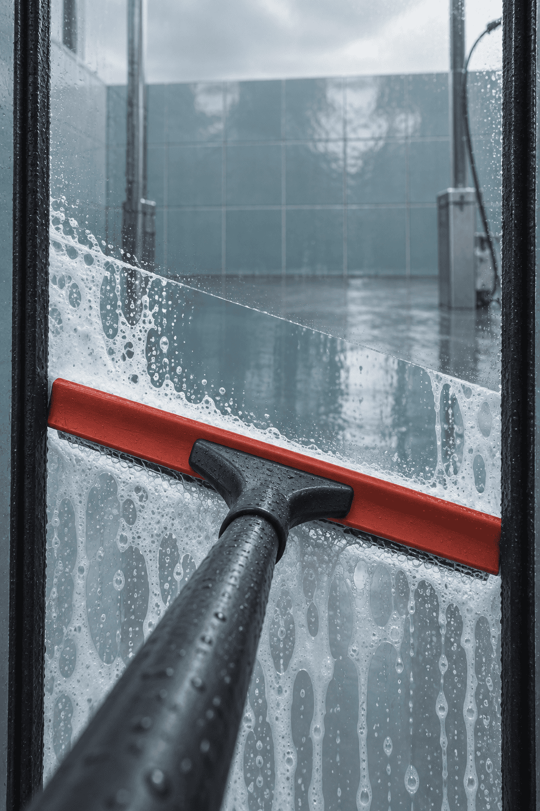

밀대 사용법
곧게 밀어, 직각으로.
빨간 밀대를 잡고 검정 고무까지 한 번에 밀어 보세요. 손을 놓은 뒤에 두 선이 직각인지 확인해요.
검정 고무 두 줄이 평행하면 닦고, 평행하지 않으면 창의 빈 곳을 잡아 옆으로 밀어 보세요. 거리 주문은 창 위의 눈금을 세어 보세요.
비스듬한 자국이 남으면 밀대를 짧게 눌러 들어 보세요. 한 번은 마개를 쓰지 않고 다시 밀 수 있어요. 마개 0개 또는 90초가 되면 끝나요.
연습 · 시간 멈춤
빨간 밀대를 잡고 검정 고무까지 밀어 보세요.

밀대로 물기를 닦아라
오늘의 세차 기록
밀대 사용법
빨간 밀대를 잡고 검정 고무까지 한 번에 밀어 보세요. 손을 놓은 뒤에 두 선이 직각인지 확인해요.
검정 고무 두 줄이 평행하면 닦고, 평행하지 않으면 창의 빈 곳을 잡아 옆으로 밀어 보세요. 거리 주문은 창 위의 눈금을 세어 보세요.
비스듬한 자국이 남으면 밀대를 짧게 눌러 들어 보세요. 한 번은 마개를 쓰지 않고 다시 밀 수 있어요. 마개 0개 또는 90초가 되면 끝나요.